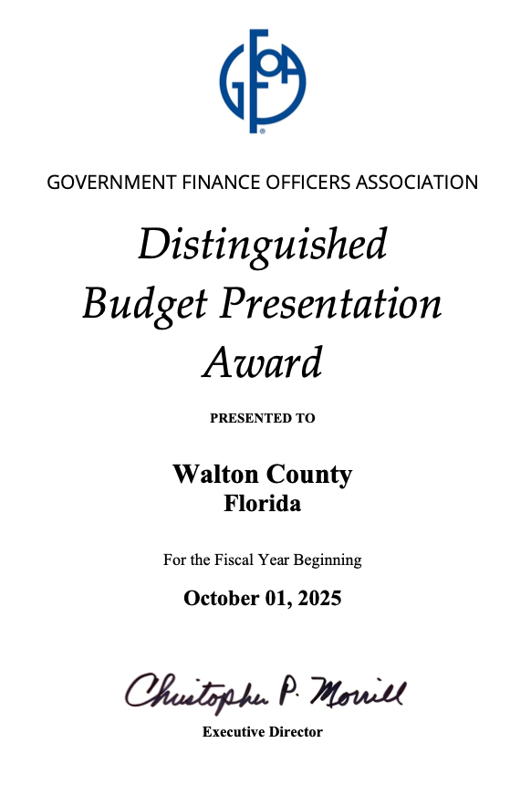

Distinguished Budget Presentation Award
The Government Finance Officers Association of the United States and Canada presented a Distinguished Budget Presentation Award to Walton County, Florida for its Annual Budget for the fiscal year beginning October 1, 2025.
Beginning in 2026, GFOA evaluates the complete set of materials a government uses to communicate its budget. The revised program awards points for clear, complete information about priorities, services, revenues, personnel, capital planning, long-term financial conditions, and the budget process.
This award is valid for one year. Walton County is presenting its FY 2027 tentative budget through an accessible, interactive website and intends to submit the completed budget materials to GFOA to determine eligibility for another award.

Internal review note — remove before publication. The consecutive-year count shown in red on the award badge above could not be confirmed from the material held in this repository. Check it against GFOA’s published winner list, or against the County’s own award certificates, and correct the badge if the count is wrong.
How this budget scores against the 2026 criteria
GFOA scores a budget in fourteen categories worth 200 points in total, and awards the Distinguished Budget Presentation Award to any government scoring more than 100. Each category is a set of questions a resident might reasonably ask. Below is every one of those 185 questions, whether this site answers it, and where. The point estimates are this office’s own reading of the criteria and carry no weight with GFOA, whose evaluation is independent.
Read this as a working review, not a result. The estimate assumes the tentative budget is submitted broadly as published here. Points shown as lost are almost always missing information rather than bad writing, and the fastest gains are marked in each category below. Statements shown in red are written from the best information available and still need to be checked against a source document.
Content categories 110 of 150 points
Community Priorities and Organizational Challenges/OpportunitiesDoes the budget explain what problems the County is actually facing, what it decided to do about them, and how anyone will know whether it worked? 13/20
Why this score. The six challenge cards are unusually well structured for this criterion — each one states a root condition, a planning horizon, who is affected, the budget response, and how progress will be measured. Points are lost because the challenges are described qualitatively. A reviewer looking for evidence that the County analysed a root cause will find the cause named but not measured, and will find no numeric target that says what success looks like by a specific date.
| Question GFOA asks | Status | Where it is answered, or what is missing |
|---|---|---|
| What are major challenges facing the organization? | Answered | Transmittal Letter — six named challenges |
| How were challenges defined? | Answered | Same page, opening section: department requests, revenue estimates, forecast, Board workshops |
| Is this a new challenge? | Not answered | Not stated. No challenge is identified as new, recurring, or worsening |
| Did the organization analyze the root cause of problems and act on it? | Partly answered | “Root condition” is named for each challenge, but no supporting analysis or data is shown |
| What time horizon was considered in identifying challenges? | Answered | “Planning horizon” row on each challenge card |
| What are the major challenges facing the community? | Partly answered | Community effects are described per challenge; Overview of Walton County carries demographic context |
| Are challenges uniform across the community, or do they disproportionately impact a specific segment? | Not answered | Not addressed. No geographic or demographic breakdown of who is most affected |
| Are other governments serving the community also impacted? | Not answered | Not addressed. Municipalities, school district, and special districts are not discussed as co-affected |
| How does this budget address those challenges? | Answered | “Budget response” row on each challenge card |
| Will the budget solve the problem or slow the rate of degradation? | Not answered | Not stated for any challenge |
| Is the proposed solution proportional to the problem? | Not answered | Not addressed |
| Does the organization have the capacity to achieve the solution? | Partly answered | Implied by the budget-reduction exercise and fund-capacity review; never stated directly |
| Are results expected to improve within the budget period? When? | Not answered | No expected result date is given for any challenge |
| What metrics is the organization tracking to measure success? | Partly answered | “How progress is measured” names the measure but gives no baseline or target value |
ValueCan an ordinary resident see what they personally get for their money, and what it costs them? 16/20
Why this score. Department profiles now translate operating cost into annual and monthly household equivalents, distinguish residential and commercial property-tax support, separate resident and non-resident sales-tax support, identify user-paid fees, and connect those dollars to named county services. The remaining gaps are countywide rather than departmental: there is still no defensible all-services household total and no comparison with familiar household purchases.
| Question GFOA asks | Status | Where it is answered, or what is missing |
|---|---|---|
| What is the public getting from the government? | Answered | Department profiles name the continuing county services residents receive and connect them to each department’s budget |
| How are public benefits communicated from the perspective of a public stakeholder? | Answered | Citizen Questions explain services, funding, cost, capital, contracts, staffing, collaboration, change, challenges, and accountability in resident-facing language |
| Is the budget message scaled to communicate “what’s in it for me”? | Partly answered | Department Who Pays sheets provide household equivalents and distinguish taxes, visitor-supported revenue, and user fees; no single countywide household total is yet published |
| Are metrics, examples, and stories used to communicate public benefit? | Answered | Department profiles combine available performance measures, local videos, service descriptions, capital items, and year-over-year change explanations |
| How much does the government cost? | Answered | Consolidated Schedules provide countywide totals; department profiles provide operating, personnel, capital, and detailed budget sheets |
| How does a public stakeholder pay for public services? | Answered | Revenue Budget — “Who pays” identifies the payer type for each major source |
| How much does a public stakeholder pay for specific services? | Answered | Property Tax Allocations — the calculator returns a parcel-level estimate split by department |
| What is the total cost per person / family / household for all services? | Not answered | Not calculated anywhere on the site. This is a single derived figure and the largest available point gain in this category |
| How expensive are government services compared to other common purchases? | Not answered | No comparison of any kind is offered |
| Is cost communicated in a way that is easily understood? | Answered | Department snapshots, annual and monthly household equivalents, payer-specific explanations, tooltips, and detailed sheets provide progressive disclosure from a plain-language summary to account-level evidence |
Long-Term OutlookDo this year’s decisions leave the County better or worse off five years from now? 15/20
Why this score. A five-year forecast, a reserve-policy comparison calculated live against Resolution 2012-52, and an explicit treatment of restricted versus available fund balance cover most of what this criterion asks. Points are lost on the forward-looking half: the forecast presents a single baseline and says so, so there is no scenario or sensitivity work for a reviewer to credit, and the County never shows whether its past forecasts turned out to be accurate.
| Question GFOA asks | Status | Where it is answered, or what is missing |
|---|---|---|
| How do current budget decisions impact the long-term fiscal outlook? | Answered | Financial Forecast — FY 2027 through FY 2031 for major funds |
| Do current decisions help or hurt the long-term outlook? | Partly answered | The structural-balance note explains how to read it, but no verdict is offered |
| How does the current budget impact reserve levels? | Answered | Forecast shows projected ending fund balance by fund |
| What type of reserves are maintained? What is the strategy? | Answered | Financial Policies and the fund-balance classification discussion |
| Are reserves dedicated for a specific purpose? | Answered | Board-committed Tourist Development / Beach Renourishment balance is shown separately |
| How do current reserve levels compare to policy? | Answered | General Fund Policy Comparison calculates the two-month benchmark from live data |
| Are any expenses deferred to future budgets? What is the justification? | Partly answered | The forecast notes deferred capital exists but does not list deferred items or justify them |
| Does the budget create any long-term spending obligations? | Partly answered | Continuing obligations are described in general terms |
| Are there new maintenance or operating costs for new assets? | Partly answered | A per-project operating-impact field exists but is not populated for every project |
| Does the budget add positions that will need to be maintained? | Partly answered | Personnel Budget shows FTE changes; their multi-year cost is not projected |
| Are there new contractual obligations requiring future payments? | Not answered | Not identified separately |
| What were prior-year trends and their impact on the future outlook? | Answered | FY 2020–FY 2025 actuals are available throughout via the prior-year toggles |
| What trends are expected in the future? | Answered | Forecast assumptions document the growth rates applied |
| How likely are different scenarios? Do you plan for different scenarios? | Not answered | The forecast states it presents one baseline. No alternative scenario is modelled |
| Was the government accurate with past forecasts? | Not answered | No comparison of prior forecasts to actual results appears anywhere |
Revenue BudgetWhere does the money come from, how sure are we of it, and who actually pays? 19/20
Why this score. The reader guide on the revenue page is the strongest plain-language writing on the site: it separates recurring from one-time money, explains legal restrictions, and states how much control the Board actually has over each source. Six years of actuals give a reviewer real trend evidence. A Florida Department of Revenue county profile now supplies a sourced property-value proxy for revenue by sector and a dollar estimate of revenue foregone through exemptions. The category loses its remaining points on cost-reimbursement targets and community burden distribution, which the page openly declines to estimate without a documented methodology — defensible, but unscored.
| Question GFOA asks | Status | Where it is answered, or what is missing |
|---|---|---|
| How much revenue is anticipated? | Answered | Revenue Budget by classification and source |
| Is revenue recurring or one time? | Answered | Reader guide separates recurring, dedicated/restricted, and variable/nonrecurring |
| How do revenue amounts change from prior years? What short-term trends were considered? | Answered | FY 2020–FY 2025 actuals available per revenue line |
| How does expected revenue compare to other governments? | Answered | Nearby-government comparison presents same-year county operating millage and tourist-tax rates from the Florida Department of Revenue and explains why raw revenue totals are not directly comparable |
| Has the government changed any policies that impact collection? | Partly answered | Rate and fee authority is described; no change log for FY 2027 |
| What strategies or assumptions were used when forecasting? | Answered | Overview names the methods; forecast assumptions give the rates |
| Are revenue sources diverse? What are the major and minor sources? | Answered | Six classifications with major sources named in each |
| What is the level of uncertainty with major revenue sources? | Answered | “County control and outside risk” section |
| What are key assumptions for major revenue sources? | Answered | Documented in the forecast assumptions |
| How much control does the government have over revenue? | Answered | “Rate and fee authority” section |
| What options are available to increase revenue? | Answered | Revenue choices available to the County identifies property-tax, fuel-tax, Tourist Development Tax, fee, assessment, impact-fee, surtax, grant, partnership, and financing options with payer and legal-use context |
| Does the government have the ability to adjust rates? How are rates established? | Answered | “Rate and fee authority”; fee schedules and ordinances are linked |
| Did rates or fees change from prior years? | Partly answered | The millage basis is stated as the rolled-back rate; fee changes are not summarised |
| Is revenue restricted for specific purposes? | Answered | “Dedicated or restricted revenue” section and the fund structure pages |
| Does revenue cover the cost of the service it is raised from? Do cost-reimbursement targets exist? | Not answered | The page states no verified cost-recovery targets exist |
| How is revenue burden distributed among the community? | Not answered | The page states no verified burden shares are available |
| How much revenue is collected from non-residents? | Answered | Visitor revenue disclosure presents the official 2025 tourism study’s visitor spending, state and local taxes, revenue to Walton County government, cost to serve visitors, net benefit, and household savings alongside the FY 2027 Tourist Development Tax budget |
| How much revenue is collected by sector (residential vs commercial/industrial)? | Answered | Property tax base by sector presents the Florida Department of Revenue’s 2024 real property just value by classification (87.9% residential, 5.3% commercial/industrial) as a documented value-based proxy, since the County does not track ad valorem collections by sector directly |
| How much revenue is foregone through exemptions or discounts? | Answered | Property tax base by sector states the $3,212,567,104 in 2024 county-taxable value removed by exemptions and the resulting approximate $11.6 million in foregone County ad valorem revenue, sourced to the Florida Department of Revenue |
Personnel BudgetHow many people work for the County, what do they cost, and what is changing? 14/15
Why this score. Close to fully answered, and the market question is answered better than most applicants manage. The independent Evergreen compensation study gives a real external benchmark — 78 classifications against 20 peer counties and cities, County ranges 15.6% below the market midpoint — together with four costed options for closing the gap, which is exactly the “what is being done about it” evidence this criterion asks for. Overtime is shown as an eight-year series from actuals rather than a single budget figure, and the page states plainly that the tentative budget sits below the most recent actual. Staffing is also reported by function, using the same classification the expenditure schedules use, so the workforce and the money can be read side by side. The only remaining gap is turnover and expected hiring, which live in HR systems rather than the budget file.
| Question GFOA asks | Status | Where it is answered, or what is missing |
|---|---|---|
| How many total staff are budgeted? | Answered | Personnel Budget — FTE by office and department, FY 2024–FY 2027 |
| How many staff are full time vs. part time? | Answered | “Who the budget pays for” — 694 full-time and 18 part-time budgeted positions, derived from scheduled annual hours, with the part-time positions identified by department |
| How many staff are in each department? | Answered | Same table, by department |
| Are staff organized by program or function? | Answered | “Authorized staffing by function” groups all 1,516 authorized FTE into the same functional categories the budget uses for expenditures — Public Safety 49%, General Government 24%, Transportation 11%, Economic Environment 10% |
| How do you determine optimal staffing? | Answered | “How staffing levels are decided” — a department must submit a written staffing justification that County Administration approves before a position enters the tentative budget |
| Did personnel costs change from prior year? | Answered | Personnel Budget — Pay & cost with prior-year columns |
| Has there been an increase or decrease in overall staffing? | Answered | Change column in the FTE table; total authorized FTE rises across FY 2024–FY 2027 |
| What are turnover rates? Are they changing and why? | Not answered | Disclosed as not supplied. This is the largest remaining gap in the category |
| What are turnover rates for key positions? | Not answered | Disclosed as not supplied. The compensation study identified retention pressure in hard-to-fill classifications but no rate is published |
| How many new people does the government expect to hire? | Not answered | Disclosed as not supplied |
| Where were staffing numbers increased or reduced? | Answered | Department-level change column and staffing notes |
| Which positions or functions expect the most significant staffing changes? | Answered | “Largest staffing changes proposed for FY 2027” ranks departments by FTE movement |
| What are the major drivers impacting personnel costs? | Answered | 3% cost-of-living adjustment, the health-insurance assumption, and the pay plan built from the compensation study |
| Have salaries changed? Are benefit costs changing? | Answered | Cost summary separates salaries, retirement, health insurance, and other benefits |
| Do you plan salary changes during the budget period? | Answered | “Pay changes during the year” — no mid-year or across-the-board adjustment is planned; directors may award individual merit increases with Human Resources and County Administration under the County pay policy |
| Are premium salary costs (overtime, shift premium) expected to increase? | Answered | Overtime is charted FY 2020–FY 2027 from actuals, up about 102% over the actual years and concentrated in Public Works; scheduled weekend and shift premium is reported separately by department |
| Are costs increasing faster than industry trends? What is being done? | Answered | “How County pay compares to the market” — the Evergreen study against 20 peers, the resulting pay plans, and four costed implementation options from $1.65M to $2.60M |
Department BudgetFor each department: what does it do, what does it cost, and how do we know it is doing it well? 13/15
Why this score. Every Board department now follows the same resident-facing profile: statement of function, core services, condensed financial and staffing snapshots, plain-language changes and challenges, and progressively disclosed Citizen Questions. Operating, revenue, capital, contractual, personnel, and Who Pays sheets provide line-level evidence, while accountability and collaboration are answered directly. Remaining constraints are source-data gaps: goals and performance measures are not available for every department, and internal service costs are not fully separated.
| Question GFOA asks | Status | Where it is answered, or what is missing |
|---|---|---|
| What services does each department provide? | Answered | Department pages — narrative for all 78 departments and agencies |
| How are programs and services defined? | Answered | Each Board department page defines a service as a distinct, ongoing function that produces a recognizable result and distinguishes the explanatory grouping from an accounting program or audited cost center. |
| Are goals set for each service area? | Partly answered | Goals and objectives are published for 28 of 73 budgeted departments — count derived from the published performance-measure data, not from an OMB list; confirm before submission |
| Are services being added? | Answered | Each Board department page states that no new service is being added in FY 2027 and distinguishes a new service from changes in funding, staffing, workload, or delivery level. |
| What challenges is the department facing in providing service? | Disclosed | Each page states that a department-specific challenges statement was not supplied in the published source material; verified department answers remain needed. |
| What are the costs for each department? | Answered | Department pages with object-level detail and transaction drill-down |
| How are costs measured? | Answered | Object codes and object types; glossary defines them |
| What are costs for personnel? | Answered | Personnel cost by department |
| What are costs for contracted purchases? | Answered | Summary of Contractual Services, with vendor and contract links |
| What are internal costs? | Partly answered | Interfund transfers are shown; internal service charges are not separated |
| How is the department held accountable for results? | Answered | Each Board department has an accountability response covering oversight, budget monitoring, public reporting, and available performance measures and targets |
| Does the department work with other departments? | Answered | Each Board department identifies the departments and shared processes it relies on to deliver its work |
| Are metrics defined to determine success? | Partly answered | For 28 departments, with FY 2022–FY 2025 actuals and FY 2026–FY 2027 projections |
Program BudgetWhat does each service actually cost to run, who pays for it, and what does it deliver? 7/15
Why this score. The Program Budget page is the right idea and is the correct place to build this out, and now spans Constitutional Officers and other autonomous entities alongside Board departments, not Board departments alone. Each program now shows year-over-year budget and FTE change, a cost split by personnel/operating/capital/debt/grants, and a subsidy figure — the dollar amount and share of program cost not covered by revenue assigned directly to its departments, calculated net of interfund transfers so a transfer-supported program (e.g. the Sheriff's Office, funded almost entirely by a General Fund transfer) is not mistaken for self-funded. But it is still a grouping of department and agency budgets rather than a true program budget, and the page says so directly. The remaining questions in this category ask for something a real cost-allocation exercise would produce — core versus non-core services, fixed versus variable cost, expected activity volumes, and fee-setting methodology — and none of that data exists yet. That is where new data collection, not new writing, is what would move the score further.
| Question GFOA asks | Status | Where it is answered, or what is missing |
|---|---|---|
| What are the major programs and services? | Answered | Program Budget — 11 program areas |
| How is a program or service defined? | Partly answered | Defined as a grouping of departments and agencies, which the page discloses is not a cost allocation |
| Does the government identify core vs. non-core services? | Not answered | No such distinction is drawn |
| Which services are new? | Not answered | Not identified |
| Which departments contribute to programs and services? | Answered | Each portfolio lists its departments or agencies and links to them, including Constitutional Officers and other autonomous entities |
| Do programs have a defined purpose? | Partly answered | Each portfolio has a short description |
| What are the costs for each major program or service? | Partly answered | Department budgets are summed, and the page states this is context rather than an audited allocation |
| How are costs for each program tracked? | Not answered | No program-level cost tracking exists in the budget data |
| What is included in program cost? | Not answered | Not defined |
| Are costs variable or fixed? | Not answered | Not analysed |
| What portion of program cost is personnel, contracted purchases, capital? | Partly answered | Each program now shows its FY 2027 cost split by personnel services, operating expenditures, capital outlay, debt service, and grants and aid; contracted purchases are not broken out separately from operating expenditures |
| What are program service-level goals? How is service level measured? | Partly answered | Available performance targets are surfaced per portfolio where a department has them |
| What options were considered when setting the budgeted service level? | Not answered | Not documented |
| Have service levels increased or decreased? | Partly answered | Each program shows year-over-year budget and FTE change as a proxy; this measures dollars and staffing, not service level or output directly |
| How do programs align with priorities? | Partly answered | Strategic Initiatives codes link measures to Board priorities |
| How is community impact measured? | Not answered | Not addressed at the program level |
| Do programs generate revenue? How much is subsidised by other revenue? | Answered | Revenue assigned to included departments is shown by type, and each program states the dollar amount and share of cost not covered by directly assigned, non-transfer revenue, net of interfund transfers so a transfer-supported program is not miscounted as self-funded |
| How are fees set (benchmark, cost recovery, other)? | Not answered | Fee schedules are linked but the setting methodology is not explained |
| What activity level is expected? | Not answered | Workload or demand volumes are not projected |
Capital BudgetWhat is being built or replaced, why, when, what will it cost to run afterwards, and is the money actually there? 9/15
Why this score. The five-year plan, the fund schedules, and the searchable project index with per-project detail cover the “what and when” questions. The capital definition is published and consistent. Points are lost on planning-quality questions: projects are not classified as new versus replacement versus rehabilitation, unmet needs are not listed, lifecycle management is not described, and full-funding and contingency status is not identified. The site already carries an honest completeness disclosure showing how many projects are missing each field, which is the right groundwork for fixing this.
| Question GFOA asks | Status | Where it is answered, or what is missing |
|---|---|---|
| What is the definition of capital? Is it used consistently? | Answered | $5,000 and one-year useful-life threshold; glossary defines capital improvements |
| What is the level of capital spending? How was it determined? | Partly answered | Five-year plan totals by fund and year; the sizing rationale is not explained |
| Has capital spending increased or decreased? | Partly answered | Year-by-year plan figures are shown without a trend narrative |
| How much capital spending is part of a recurring program? | Not answered | Recurring capital programs are not distinguished from one-time projects |
| How are capital projects prioritized? How were needs determined? | Partly answered | A project priority field is published where departments supplied it; the prioritisation method is not described |
| What unmet needs are not budgeted this year? | Not answered | Only unfunded machinery and equipment is tracked. No unfunded project list exists |
| How do you manage lifecycle costs of assets? | Not answered | No asset-management or lifecycle-costing approach is described |
| How is the capital budget funded? What revenue sources contribute? | Answered | Funding sources by project and fund schedules for Capital Projects, Sheriff, Tourist Development, and Transportation |
| Is capital spending for new assets, replacements, or rehabilitation? | Not answered | The project data does not classify projects this way — noted in the site’s own completeness disclosure |
| Why are new projects necessary? | Partly answered | Project narratives exist where supplied |
| What is the operating impact and the future cost of deferred capital spending? | Partly answered | An operating-impact field exists but is not populated for every project; deferred capital cost is not quantified |
| Can the budget accommodate future operating costs? | Not answered | Not assessed |
| What are the major projects and what benefit will they provide? | Partly answered | Project search and project detail pages; benefit is described only where a narrative was supplied |
| When are projects expected to occur? | Partly answered | Estimated completion dates where supplied; plan year for all |
| Are projects fully funded? Are any contingent on future funding? | Not answered | Not identified — noted in the site’s own completeness disclosure |
Budget ProcessHow is the budget built, who decides what, and when can the public speak? 10/10
Why this score. Fully answered. The four phases, the role of each of the five participant groups GFOA names, the statutory calendar, the budget instructions and cost assumptions given to departments, and the post-adoption amendment process are all documented. The category is carried by the public-input loop, which is the part most applicants cannot evidence: the record shows a commissioner question at the July 14 workshop producing an actual change to the proposal — a vessel and trailer removed from the Environmental Services capital request — and the removed item is traceable to the page that lists what the budget does not fund. The July 21 workshop then set the two millage rates and both personnel-cost assumptions. The two questions GFOA marks as secondary — outside advisors and budget task forces — are answered with a clear no and an explanation of the structure that does that work instead, which is a complete answer rather than a gap. Points that remain at risk are factual rather than structural: the adopted July 21 values still need checking against the minutes, and the budget instruction memorandum itself is not published.
| Question GFOA asks | Status | Where it is answered, or what is missing |
|---|---|---|
| What is the process used to develop the budget? | Answered | Four phases: preparation, review, workshops, adoption |
| What policies or regulations guide the budget? | Answered | Basis of budgeting, GAAP, Florida Statutes; Financial Policies |
| What was communicated to internal stakeholders to prepare requests? | Answered | “What Departments Were Asked to Submit” — budget instructions, the FY 2027 reduction exercise, and the cost assumptions departments had to apply |
| Who is involved in preparing the budget? | Answered | “Who Does What” covers departments, OMB, Administration, Constitutional Officers, the Board, and residents |
| Does the government use volunteers or external advisors? | Answered | Answered directly: no volunteer or citizen advisory body is used, and the reason is stated. Independent external sources used instead are named — state revenue estimates, certified taxable values, FRS and carrier rates, Constitutional Officer submissions, and published outside-agency requests |
| Were teams or task forces created for the budget? | Answered | Answered directly: no task force was convened. The structured step created for FY 2027 was the required department budget-reduction exercise, which is documented |
| What is the role of finance, staff, executives, elected officials, and the public? | Answered | All five roles are described on the process page |
| Who coordinates the budget process? | Answered | Office of Management and Budget |
| How does the government collect information and determine community priorities? | Answered | “How Community Priorities Reach the Budget” — Board Strategic Priority Initiatives, department requests, capital needs, and issues raised at public meetings |
| Who was solicited to provide feedback? | Answered | Residents and businesses through noticed workshops and TRIM hearings; every department, Constitutional Officer, and outside funded agency submits a request. The absence of a resident opinion survey is stated rather than left open |
| How does the budget align with defined community priorities? | Answered | Strategic Initiative codes tie department measures to Board priorities |
| When are tentative decisions made? When are they finalized? | Answered | Budget Process & Calendar; rates and personnel assumptions set July 21, final hearing September 28 |
| When can the public engage? What methods collect feedback? | Answered | Workshops, TRIM hearings, the OMB email address, and the County notification list |
| What feedback was provided? | Answered | Commissioners questioned an equipment request in the Environmental Services capital submission at the July 14 workshop |
| What changes were made to the draft budget as a result of public feedback? | Answered | The vessel and trailer was removed and now appears under Requested But Not Included in the Budget; the July 21 workshop set both millage rates, the pay adjustment, and health insurance |
Type of material categories 29 of 50 points
Budget DocumentIs there a findable, organised, readable budget document? 7/10
Why this score. Judged as a document, the site provides a table of contents, a transmittal letter carrying the budget message, consistent branding, and a print path. The risk is that a reviewer expecting a paginated document receives a website instead. Whether the generated PDF reproduces the interactive content faithfully — and whether it meets the accessibility standards this criterion explicitly asks about — has not been tested and should be before submission.
| Question GFOA asks | Status | Where it is answered, or what is missing |
|---|---|---|
| Is the budget document accessible from the government's website? | Partly answered | This site is published at budget.mywaltonfl.gov, but how prominently it is linked from the main County homepage has not been verified |
| Can a user find it through site search and navigation links? | Answered | Site-wide search and a persistent navigation menu on every page |
| Is the budget document organized? Does it contain a clear table of contents? | Answered | Table of Contents organised by section |
| Is the table of contents clear to the audience? | Answered | Each entry carries a plain-language description |
| Does it provide a clear budget message summarizing main themes? | Answered | Transmittal Letter |
| Is the budget message prominently placed? | Answered | First item under Introduction and Overview |
| Does it effectively use graphics and images? | Answered | Charts, department imagery, org chart, and 14 embedded videos |
| Do graphs contain appropriate use of color? | Partly answered | Consistent palette with a dark theme, but chart colours have not been formally tested for contrast or colour-blind safety |
| Is text formatted to draw attention to key messages? | Answered | Reader guides, callouts, and metric tiles are used consistently |
| Are images appropriate, engaging, and easily understood? | Answered | Department and county imagery throughout |
| Does the document comply with all applicable accessibility standards? | Partly answered | Accessibility statement and an internal checklist exist; no third-party WCAG audit result is published, and the printed/PDF output has not been separately tested |
Budget-In-Brief / NewsletterIs there a short, attractive summary a resident would actually read? 0/10
Why this score. The Budget in Brief page was removed. It carried several dollar and percentage figures typed in directly rather than pulled from verified schedules, flagged internally as needing confirmation before publication; rather than publish a one-page summary with unverified numbers, it was taken down. Budget Overview still links every major budget page from one place, but that is a directory, not a short standalone summary a resident would read end to end. This category is unscored until a verified plain-language summary is rebuilt from confirmed figures.
| Question GFOA asks | Status | Where it is answered, or what is missing |
|---|---|---|
| Does it provide a concise overview of the budget? Is it actually brief? | Not answered | No standalone summary page exists; see Budget Overview for navigation instead |
| Does it provide a concise summary upfront with a key message? | Not answered | Not published |
| Is it free from non-relevant information and limited to budget content? | Not answered | Not applicable — no page exists |
| Is it credible as an educational tool rather than a promotional brochure? | Not answered | Not applicable — no page exists |
| Was it distributed to citizens? Is it used to communicate with the public? | Not answered | Not applicable — no page exists |
| Is it received by all members of the public? | Not answered | Not applicable — no page exists |
| Is the design attractive and engaging? | Not answered | Not applicable — no page exists |
| Is text formatted to draw attention to key messages? | Not answered | Not applicable — no page exists |
| Do graphs contain appropriate use of color? | Not answered | Not applicable — no page exists |
| Does it look professional and use organizational branding? | Not answered | Not applicable — no page exists |
| Does it highlight recognizable features of the community? | Not answered | Not applicable — no page exists |
Budget Website or DashboardIs the budget online in a way people can explore, on any device? 9/10
Why this score. This is the site’s strongest category and the reason the overall estimate clears the award threshold. Drill-down runs from countywide totals to individual transactions, the property-tax calculator is genuinely interactive, search covers the whole site, and there is a published accessibility statement and a working dark theme. The remaining points sit in the questions about reaching people who are not already looking: there is no on-site way to ask a question, no content in Spanish, and updates are annual rather than continuous.
| Question GFOA asks | Status | Where it is answered, or what is missing |
|---|---|---|
| Is the budget website easily accessible from the government's primary website? | Partly answered | Placement of the budget link on mywaltonfl.gov has not been verified from this repository |
| Is budget information integrated with the organization's website (non-redundant)? | Answered | Separate budget site cross-linking to County document and meeting pages |
| Is the budget website interactive? Do drill-down features provide more information? | Answered | Fund and department drill-down to object code and individual transactions |
| Does the website provide a dashboard? | Answered | Home page and Financials hubs; interactive tax calculator |
| Does information contain videos and other media? | Answered | 14 embedded videos plus charts and an interactive org chart |
| Can the public sign up to be notified of additional information? | Partly answered | Links out to the County News Flash subscription; no budget-specific list |
| Can the public ask questions on the website or through online channels? | Partly answered | An OMB email address is published; there is no form or social channel on the site |
| Can the public find information on how to engage with the budget process? | Answered | Public Input and Decision Record and Budget Calendar |
| Does the budget website meet accessibility standards? Does it provide disability access? | Partly answered | Accessibility statement, keyboard navigation, ARIA live regions, skip links; no published third-party audit |
| Does the website provide access from mobile devices? | Answered | Dedicated mobile stylesheet and responsive layouts throughout |
| Is content available in multiple languages? | Not answered | English only. No translation option is offered |
| Is the website updated in a timely manner, more than once per year? | Partly answered | The workshop record is maintained through the current cycle; no update cadence is stated on the site |
VideosIs there video that explains the budget itself in plain language? 5/10
Why this score. Fourteen videos is more than most applicants submit, and they are well placed on the pages they belong to. But this criterion asks specifically about budget videos, and these are department and community videos: none of them delivers the budget message, explains a budget term, or walks a viewer through how the County’s money works. A single short video covering the budget message would convert most of the missing points here.
| Question GFOA asks | Status | Where it is answered, or what is missing |
|---|---|---|
| Do budget videos highlight major budget messages? | Not answered | The 13 department videos and the county overview video appear to describe services rather than the budget. Confirm the content of each before claiming this criterion |
| Is the message easily understood? | Partly answered | The existing videos are short and plain-spoken |
| Does the video explain key budget terms or basic budget concepts? | Not answered | Not covered on video. Terms are explained in the glossary instead |
| Are mental models or fiscal fluency tools used? | Not answered | Not used in the video content |
| Does the video reflect priorities, preferences, or characteristics of the local community? | Answered | County overview video and department videos are locally produced |
| Is the video consistent with other budget communications? | Partly answered | Visually consistent placement; the messaging is not tied to the budget narrative |
| Is the video highlighted on other communications and does it have a clear audience? | Partly answered | Embedded on the relevant department pages, not surfaced from the home page |
| Is the length of the video appropriate? | Answered | Short-form embedded clips |
OthersWhat else did the County do to get the budget in front of people? 2/10
Why this score. Nothing on the site documents an outreach effort beyond publishing the material and holding the statutory meetings. If the County ran social posts, a press release, a public meeting presentation, or a mailer, none of it is recorded here — and this criterion is scored on documented outreach, not on effort. This is the cheapest category to improve: it needs a page recording what was done, not new budget analysis.
| Question GFOA asks | Status | Where it is answered, or what is missing |
|---|---|---|
| What other creative tools or strategies were used to communicate the budget? | Partly answered | The interactive site and the searchable project index are themselves the primary strategy |
| Did the strategy include social media? | Not answered | No social media activity is documented on the site. If the County posted about the budget, recording it would earn points here |
| Did the strategy include a broader marketing campaign? | Not answered | Not documented |
| Were other creative outreach methods used to generate engagement? | Partly answered | The tax calculator and project search are strong engagement tools, but are not presented as an outreach campaign |
| How do you measure the success of these strategies and tools? | Not answered | No analytics, reach, or engagement figures are published. Site analytics exist per the privacy page; summarising them would answer this |
| Was the campaign effective? | Not answered | Not assessed |
Criteria and point values are taken from GFOA’s published revised 2026 award criteria. GFOA distinguishes primary questions, which apply to nearly all governments and drive the completeness score, from secondary questions, which apply only where relevant to a particular audience; both are listed together above. A companion working view is available below in the Criteria Location Guide.
Criteria location guide
A behind-the-scenes index showing where award reviewers can verify Walton County’s budget information, plus an internal tracker of evidence still needed before submission.
For residents: You do not need this checklist to understand the budget. Start with the Budget Overview or explore the program budget.
Open the GFOA criteria map10 review areas with links, documentation status, and submission notes
Submission status: This guide supports preparation and review; it is not a claim that the tentative document has earned the award. Final eligibility depends on timely submission, the adopted budget, required application materials, and GFOA’s independent evaluation.
| Criteria area | Primary location | What is documented | Status before submission |
|---|---|---|---|
| Community conditions and input | Transmittal Letter Public process | Root conditions, planning horizon, service effects, workshop links, verified financial outcomes, and participation routes. | Ongoing |
| Public value and major services | Program Budget Property-tax allocations | Resident-facing program portfolios spanning Board departments, Constitutional Officers, and other agencies, with resources, staffing, revenue support, and available outcome measures. | Documented |
| Long-term outlook and reserves | Financial Forecast Financial Policies | Five-year assumptions, fund trends, committed balances, and General Fund comparison with the adopted two-month benchmark. | Documented |
| Revenue | Revenue Budget | Source characteristics, reliability, restrictions, general payer type, County control, and data limitations for burden and cost-recovery measures. | Partial data |
| Personnel | Personnel Budget | Authorized FTE, submitted position changes, compensation assumptions, personnel cost, and missing HR operational measures. | HR data needed |
| Departments and performance | Departments Strategic Initiatives | Department purpose, services, budgets, staffing, goals, objectives, measures, and targets when submitted. | Documented |
| Programs and services | Program Budget | Cross-department and cross-agency program view (including Constitutional Officers and other autonomous entities) with budget and staffing context; expressly not presented as an audited program-cost allocation. | Contextual view |
| Capital | Capital Improvement Plan Project Search | Five-year funding, sources, project records, status, priority where supplied, and a data-completeness disclosure. | Project fields needed |
| Budget process | Budget Process & Calendar | Development roles, budget instructions and cost assumptions issued to departments, statutory process and calendar, how community priorities reach the budget, the workshop decision record including changes made on Board direction, hearings, implementation, and amendment procedures. | Documented |
| Budget overview and accessibility | Table of Contents Accessibility | Navigation, searchable web content, print option, and accessibility contact and practices. A standalone plain-language single-page summary (formerly Budget in Brief) was removed pending verified figures. | Summary page needed |
Open the internal data-completeness trackerAvailable evidence and verified information still needed before submission
This internal tracker keeps evidence gaps off resident-facing pages. Move an item to “available” only when the figure is published on the site and traceable to a source.
| Topic | Available and published | Still needed before submission |
|---|---|---|
| Personnel | Authorized FTE FY 2024–FY 2027; department and position changes; full-time and part-time split from scheduled hours; staffing by function; budgeted personnel cost; weekend and shift premium; overtime FY 2020–FY 2027; 3% cost-of-living adjustment; independent market comparison. | Turnover rate and trend; turnover for hard-to-fill classifications; expected FY 2027 hiring and current vacancy count; whether the next comprehensive pay study is planned and funded; which pay-study implementation option the Board adopted and how much has been funded. |
| Revenue | Amounts by source and classification; recurring versus one-time; restrictions; County control over rates; forecasting assumptions; FY 2020–FY 2025 actuals; nearby-government millage comparison; property tax base by sector (Florida Department of Revenue proxy) and value of exemptions foregone. | Resident, non-resident, household and business burden shares; service-level cost-recovery targets. |
| Capital | Five-year plan by fund and year; funding sources; project records, status and priority where supplied; capital definition and threshold. | Classification as new, replacement or rehabilitation; unfunded project list; lifecycle and asset-management approach; full-funding and contingency status; operating impact for every project. |
| Departments and programs | Narrative, budget, staffing and activity for every department; goals, objectives, measures and targets for the departments that submitted them. | Performance measures for the remaining budgeted departments; department-level challenges; program-level cost tracking, fee cost-recovery and subsidy shares; expected activity volumes. |
| Value and long-term outlook | Parcel-level property-tax calculator; service portfolios with budget and staffing; five-year forecast; reserve policy comparison. | Total cost of County services per resident or household; comparison of that cost to familiar purchases; alternative forecast scenarios; accuracy of prior forecasts. |
| Process and outreach | Development phases and roles; statutory calendar; budget instructions and cost assumptions issued to departments; workshop decision record including changes made on Board direction. | The budget instruction memorandum itself; adopted July 21 rate and compensation values confirmed against minutes; consolidated feedback summary after the statutory hearings; documented social media and outreach activity with reach figures. |
 Walton County recognition
Walton County recognition